[N-World Contents] [Book Contents] [Prev] [Next] [Index]
Displacements & Gestures
In this chapter we'll learn how to define displacement states for an object and how to combine those displacement states into gestures.
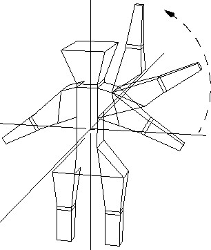
In this Chapter
Displacements are named, saved states of a polyhedron's vertices or a wire's nodes. What does that mean?
Imagine you were doing a traditional animation with clay models; for each frame, you'd have to repose the skeleton, then shoot a frame. If a character turned his head left, you'd have to turn the head slightly for each frame, and shoot each new position.
Now imagine that instead of a clay character, you are using a model in N-Geometry. Using displacement operations, you could save a pose of the model looking straight ahead as an absolute displacement, rotate the head using a rotate command, then save a pose of the model looking left as a relative displacement.
Each of these displacements can be named. You can then animate an object from one state to another in N-Dynamics. You might specify that the model start in its original position at frame 1, and that it end looking left (using the relative displacement) in frame 30. When you animate the script, the frames between would be generated automatically, and the model would gradually turn its head to the left.
- Note. You can't add or subtract the number of points on a polygon if you want its displacements to remain valid. This means that operations such as Scale, Twist, and Rotate are valid to create relative displacements, but Collapse and Dissolve are not. You should make any changes to your model before making displacements.
Absolute displacements save information for all vertices on the object; relative displacements save information only for those vertices that have been moved. There are two types of relative displacements:
Making Displacements
Try the following mini-tutorial to see how displacements work:
1. Make a basic object.
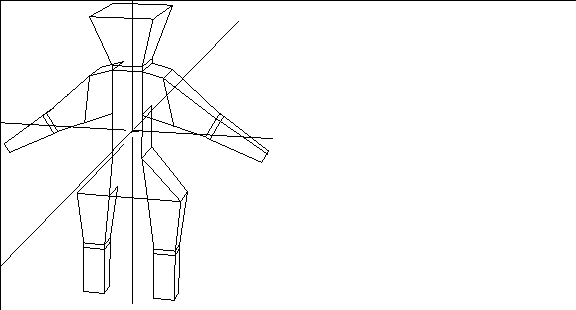
Figure 13.1 Object in original position
2. Select bodies on the sensitivity element menu.
3. (SHIFT-L) on the object, then (CLICK-L) on Make Displacement.
- The following dialog box appears:
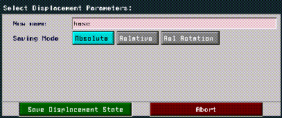
Figure 13.2 Saving an absolute displacement
- Give the object's original position a descriptive name, such as "base." Then choose Absolute (since other displacements are calculated from the object while it's in this "absolute" position).
4. Next, modify or "displace" the object to its target state.
- In this example, we collected the polygons around the man's head and made them larger with the Scale command:
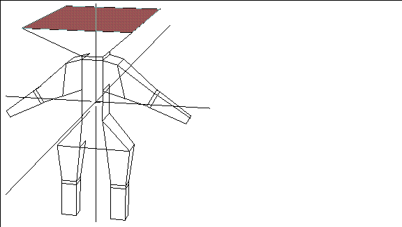
Figure 13.3 Modify the body and save its new position as a relative displacement
5. Select Bodies from the sensitivity element menu.
6. (SHIFT-L) on the object again, then (CLICK-L) on Make Displacement.
7. This time, (CLICK-L) on Relative Displacement.
- Several additional items appear on the menu:
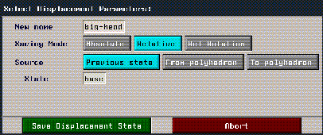
Figure 13.4 Saving a relative displacement
8. Give the relative displacement a descriptive name.
- Again, you can reference saved displacements by name in N-Dynamics.
9. Choose Previous State.
- The current state is based on a previous saved state.
10. Next to State, specify the name of the absolute displacement this pose is based on.
- In this case, we used the name "base" for our absolute displacement.
11. Choose Save Displacement State.
- You've now saved both an absolute and relative displacement state for the object.
12. Test the displacement by selecting the object and (CLICK-M) on the Displace command.
- Initialize the shape to its original state by initializing it to its absolute displacement state.
13. With the object still selected, (CLICK-L) on Displace, and (CLICK-L) on the name of the relative displacement you created earlier.
- Move the mouse left and right to move the object between its original state and its relative displacement.
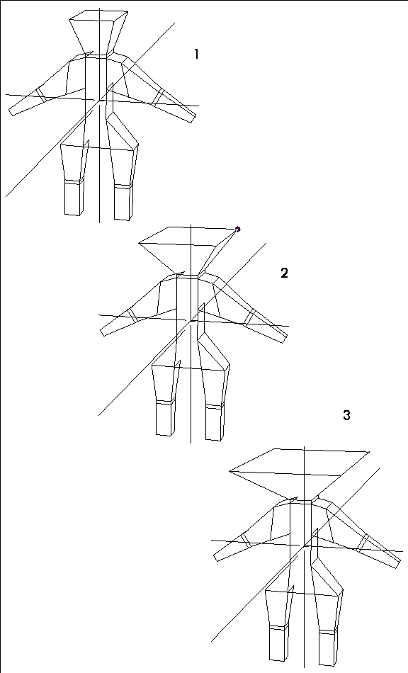
Figure 13.5 Using displacements to change the shape of the man's head
Each of the other options in the Select Displacement Parameters is described in more detail in the N-Geometry Reference Guide.
Linear vs. Rotational Displacements
When should you use rotational rather than linear displacements? In a linear displacement, points move from their base position to their target position along a linear path. While this type of animation is easy to calculate, it can cause shearing effects:
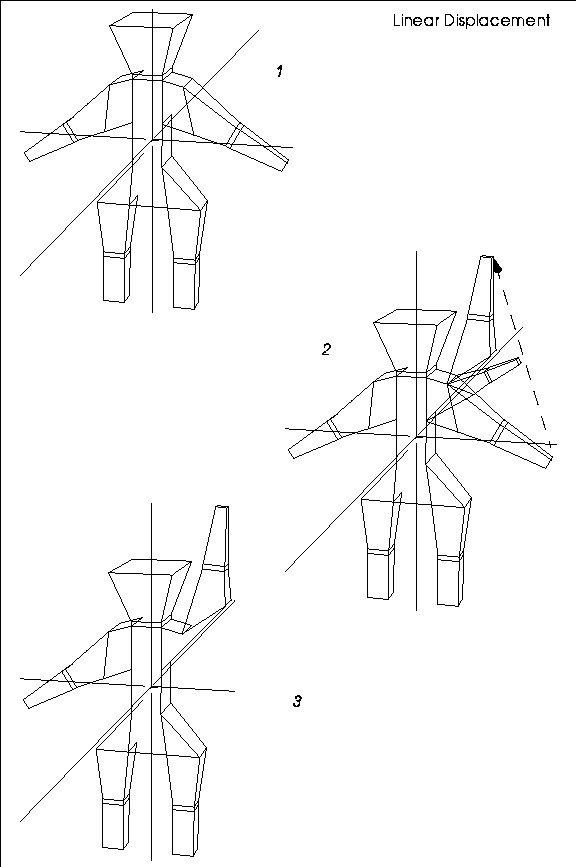
Figure 13.6 When using a linear displacement, points follow a straight path to their target state, which can cause shearing or distortion-note the arm in stage 2
Linear displacements make sense if you're performing operations on an object that wouldn't cause points to be moved through other points (such as scaling or moving).
In a rotational displacement, points move rotationally around a selected axis:
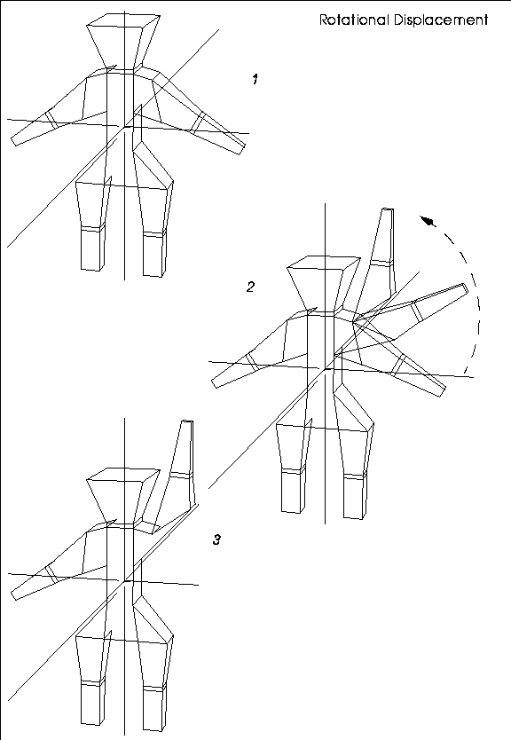
Figure 13.7 Left, displacing using a rotational displacement lets you select an axis which the displaced vertices rotate around
Choose rotational displacements if you want the displacement to follow a curved rather than straight path. You specify the rotation axis that the displaced points are to rotate around when defining the relative rotational displacement (notice the addition of the Axis menu item):
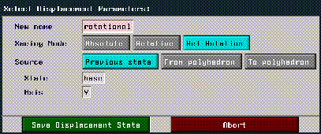
Figure 13.8 Saving a rotational displacement
To make a rotational displacement:
1. Put the object in its base state.
2. Save an absolute displacement for the object.
3. Displace the shape to its target state.
4. (CLICK-L) on Make Displacement.
5. Choose Rel Rotation for the type of displacement.
6. (CLICK-L) on Axis.
- The menu that appears lets you choose an axis that the points should rotate around (typically a point on the object itself). In the example above, we selected the Select a segment option and chose the segment on the arm that the rotation occurs around:
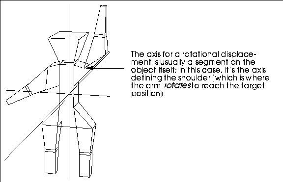
Figure 13.9 Selecting an axis for a rotational displacement
Both linear and rotational displacements can be animated using the Displace command, described below.
Using Displacements
Displace lets you not only deform vertices and nodes within the defined states of the displacements, but to extend beyond the initial state of any displacement.
You name and save displacements through the menu item Make Displacement. Displacements are especially useful for animating non-rigid motions of a polyhedron and are commonly used in conjunction with operations that influence an entire area (particularly useful for facial expressions).
Displacements can be animated through N-Dynamics.
Figure 13.10 Displacing an object numerically
Choose a target displacement state, then enter how far toward that state you want to displace the object:
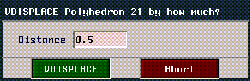
Figure 13.11 Displacing an object numerically
Use a value of 0.5 to go halfway to the saved state; use a value of 1.0 to go completely to the saved state.
- Note. You can specify values above 1.0 if you want to displace the object beyond the displaced state.
Figure 13.12 Managing displacements
Defining Gestures
If you have saved several displacements, you can combine them and save those combinations as "gestures." Gestures are displacements that are built from other previously saved displacements.
Using the same basic man figure we described in the sections "Making Displacements," on page 13-3 and "Using Displacements," on page 13-11, we could combine several saved relative displacements into a gesture. To make a gesture, you must have saved an absolute base displacement for the object and at least two relative displacements for the object.
1. (SHIFT-L) on the object.
2. (CLICK-R) on Displace.
3. Choose Displace Multiple.
- A menu similar to that shown below appears:
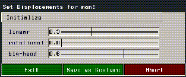
Figure 13.13 Defining a gesture
A slider is displayed for each relative displacement saved for the object; moving the sliders back and forth blends the displacements together.
4. Move the sliders to apply displacements to the object.
5. (CLICK-L) on Save as Gesture to save the current state of the model.
- Note. Gestures are particularly useful when defining facial expressions. You can use relative displacements to define states for different parts of the face (e.g., open-eyes, open-mouth, big-smile), then combine those displacements into more complex combinations (such as laugh or scream) and reference those states when animating a script in N-Dynamics.
Animating with displacements and gestures is described in more detail in the N-Dynamics Tutorial.
Congratulations!
You've now learned how to create a displacement state for an object, and how to mix multiple displacement states into a gesture.
[N-World Contents] [Book Contents] [Prev] [Next] [Index]
 Another fine product from Nichimen documentation!
Another fine product from Nichimen documentation!
Copyright © 1996, Nichimen Graphics Corporation. All rights
reserved.